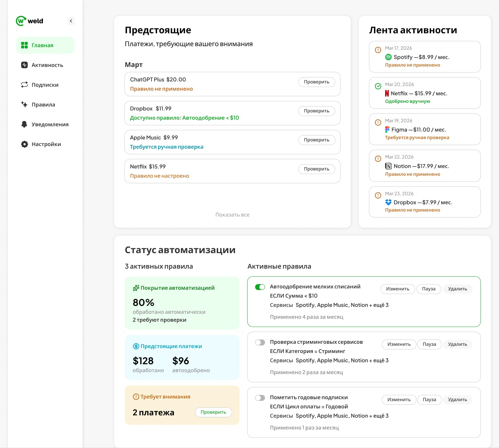
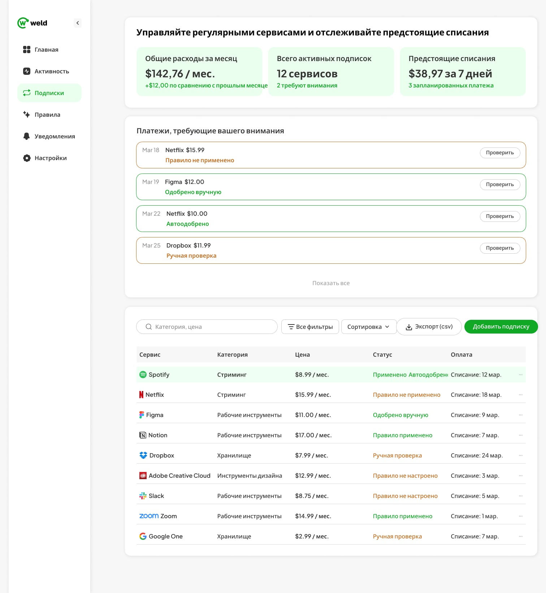
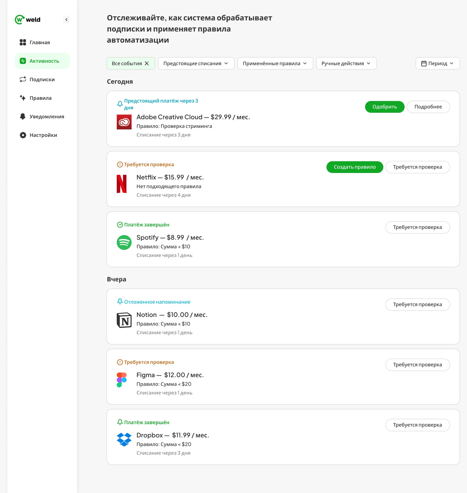
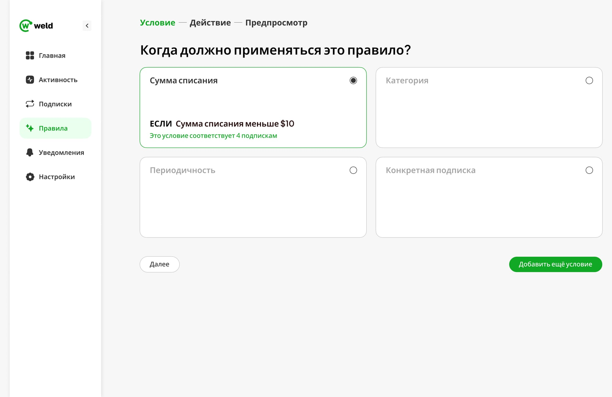
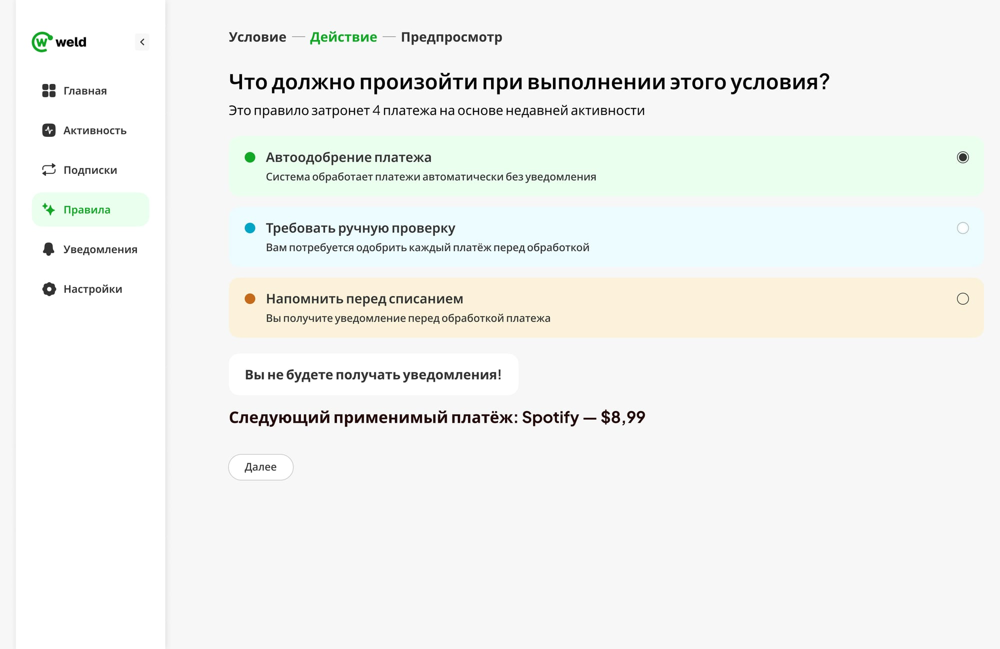
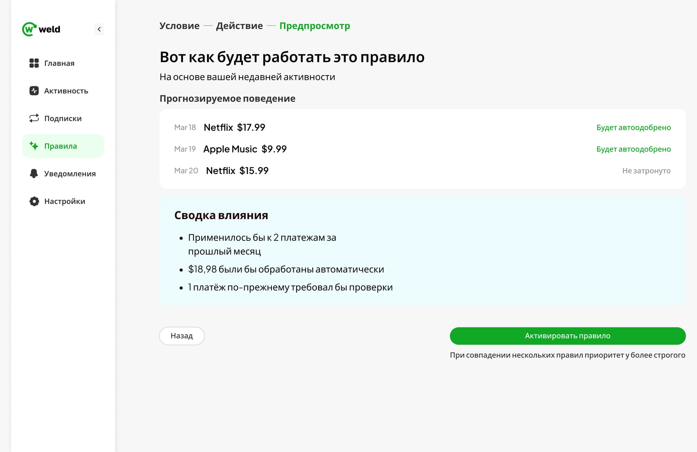
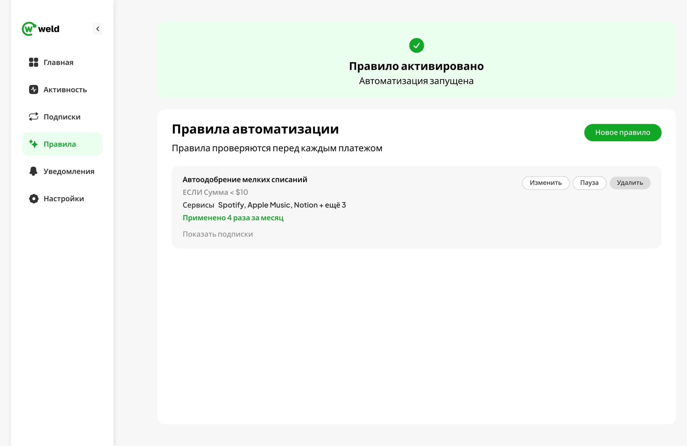

О проекте
Количество цифровых подписок стремительно растет.
Стриминговые сервисы, облачные хранилища, рабочие инструменты, AI-продукты и другие цифровые сервисы становятся частью повседневной жизни пользователей.
Со временем управление этими расходами становится сложнее: пользователи теряют контроль над платежами, забывают об активных подписках и не имеют единой картины своих регулярных расходов.
Проект исследует, каким может быть современный продукт для управления подписками, ориентированный на прозрачность, контроль и удобство использования.
Цель проекта
Разработать концепцию платформы, которая позволит:
- управлять всеми подписками в одном месте;
- отслеживать предстоящие платежи;
- контролировать ежемесячные расходы;
- анализировать финансовые привычки;
- упрощать принятие решений о продлении или отмене сервисов.
Дизайн-решение
Большинство финансовых продуктов предоставляют большое количество данных, но редко помогают быстро понять собственные расходы и принять решение.
В основе проекта лежит принцип максимальной прозрачности информации.
Каждый экран проектировался таким образом, чтобы пользователь мог быстро получить ответы на ключевые вопросы:
- Сколько я трачу?
- За что я плачу?
- Какие подписки активны?
- Какие платежи ожидаются в ближайшее время?
Данные становятся основным продуктом интерфейса.
Особое внимание уделялось:
- визуализации расходов;
- финансовым метрикам;
- аналитическим блокам;
- понятной структуре информации.
Dashboard
Financial Overview
Главный экран предоставляет быстрый обзор всех ключевых показателей.
Пользователь получает доступ к:
- общим расходам;
- количеству подписок;
- ближайшим платежам;
- финансовой динамике.

Subscription Management
Managing Active Services
Раздел подписок позволяет просматривать, фильтровать и управлять активными сервисами через единый интерфейс.
Основной акцент сделан на:
- читаемости;
- быстром доступе к данным;
- понятной визуальной структуре.

Список активных подписок
Spending Insights
Для улучшения понимания пользовательских привычек были разработаны аналитические блоки, показывающие структуру расходов и финансовые тенденции.
Информация представлена через:
- графики;
- сравнительные показатели;
- категории расходов;
- временные периоды.

Автоматизация платежей
Rule-based Control
Раздел «Правила» позволяет пользователю задать условия, при которых система принимает решения о платежах автоматически — без необходимости одобрять каждое списание вручную.
Настройка разбита на три шага: Условие → Действие → Предпросмотр.

Условие. Пользователь выбирает триггер — сумму списания, категорию, периодичность или конкретную подписку — и сразу видит, скольких активных подписок оно коснётся, до того как правило создано.

Действие. Три варианта реакции на срабатывание условия: автоодобрение, ручная проверка или напоминание перед списанием. Если выбор снижает видимость платежей, система явно предупреждает об этом.
Предпросмотр. Перед активацией пользователь видит, как правило применилось бы к его недавним платежам — какие списания были бы одобрены автоматически, какие нет — и сводку влияния в цифрах.


Почему предпросмотр, а не мгновенная активация
Правило меняет то, как система обращается с деньгами пользователя без его участия в моменте — ошибка здесь не отменяется одним кликом «назад». Показ фактического эффекта на реальных данных до подтверждения снижает этот риск и даёт пользователю основание доверять автоматизации, а не соглашаться с ней вслепую.
Отдельно учтён конфликт правил: если под платёж подходит сразу несколько условий, применяется более строгое — это исключает ситуацию, когда мягкое правило случайно переопределяет решение, требующее внимания пользователя.
После активации правило остаётся управляемым: в списке «Правила автоматизации» видно, сколько раз оно сработало и каких сервисов касается, с возможностью изменить, поставить на паузу или удалить.
Ключевые выводы
Простота улучшает решения
Чем проще представлен финансовый контекст, тем легче пользователю принимать решения.
Иерархия данных
Даже большой объём информации может восприниматься легко при правильной организации интерфейса.
Функция аналитики
Аналитика должна помогать действовать, а не просто отображать данные.
Результат
Дашборд отвечает на четыре конкретных вопроса о тратах — сколько, за что, что активно, что предстоит — на одном экране, вместо того чтобы требовать перехода между разделами подписок и платежей по отдельности.
Правила автоматизации переносят эту же логику из аналитики в действие: вместо того чтобы просто показывать данные, продукт даёт пользователю управлять тем, как система реагирует на будущие платежи — с проверкой эффекта на реальных данных до того, как решение станет необратимым.
Структура строится вокруг данных как основного контента: визуализация расходов, аналитические блоки и предпросмотр правил — не отдельные фичи, а один и тот же принцип, применённый и к чтению трат, и к управлению ими.
Это концептуальная работа без живых пользователей: сила кейса — в информационной архитектуре дашборда, продуманной логике автоматизации и работе с плотными данными, а не в проверенном на практике эффекте.